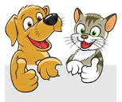

Animal Welfare

This is a website to teach you about the Great Depression... for animals. This is a website to teach you about animal abuse, because there are many disgusting things that people will do to animals. As humans, we need to step up and make a change in order to create a more ethical environment for the creatures that we share our planet with.
Test Your Knowledge With This Animal Ethics Quiz!
#1. Declawing, a selective procedure for cats at the owner's request, is illegal in many European nations, as it is considered inhumane. Has the United States also made this practice illegal?
aaaaaaaaaaaaaaaaaaaaaaaaa
Unfortunately, not. Declawing is, in fact, the unnecesary amputation of the last bone of a cat's claws; this is the equivalent of amputating a person's first knuckle. Wouldn't that hurt?
Unfortunately, you are right. Declawing is, in fact, the unnecesary amputation of the last bone of a cat's claws; this is the equivalent of amputating a person's first knuckle. Wouldn't that hurt?
#2. Although farms slaughter animals to make a living, these farms must provide the animals with ethical living conditions while they are alive, right?
aaaaaaaaaaaaaaaaaaaaaaaaaa
Unfortunately, you are right. Often times, large farms hold their animals in extremely small cages, and some even feed their livestock antobiotics and growth hormones. To make matters worse, these inhumane farms tend to force the closure of smaller, ethical farms because they are able to sell more product at a lower cost.
Unfortunately, not. Often times, large farms hold their animals in extremely small cages, and some even feed their livestock antobiotics and growth hormones. To make matters worse, these inhumane farms tend to force the closure of smaller, ethical farms because they are able to sell more product at a lower cost.
#3. With many cosmetic companies such as Lush and Urban Decay becoming cruelty-free, can it officially be said that testing on animals has ended in the cosmetic industry?
aaaaaaaaaaaaaaaaaaa
Unfortunately, you are right. According to Humane Society International, approximately 100,000 to 200,000 animals either suffer or die due to cosmetic testing every year. This includes dripping cosmetics into the eyes of animals and rubbing the product onto a shaved portion of the animal's skin.
Unfortunately, not. According to Humane Society International, approximately 100,000 to 200,000 animals either suffer or die due to cosmetic testing every year. This includes dripping cosmetics into the eyes of animals and rubbing the product onto a shaved portion of the animal's skin.
#4. The puppies in the local pet store are so adorable! They must be raised in loving homes with great conditions before being brought to the pet store, right?
aaaaaaaaaaaaaaaaaaaaaaaa

Unfortunately, not. Puppy mills, the breeding houses where dogs are raised until being brought to pet stores, are not always inspected. Females are bred without allowing for recovery time, for financial gain, and then are often killed when they are no longer able to reproduce. If this isn't shocking enough, the dogs are additionally often housed in unsanitary and overcrowded conditions.
Unfortunately, you are right. Puppy mills, the breeding houses where dogs are raised until being brought to pet stores, are not always inspected. Females are bred without allowing for recovery time, for financial gain, and then are often killed when they are no longer able to reproduce. If this isn't shocking enough, the dogs are additionally often housed in unsanitary and overcrowded conditions.
You know quite a bit about the unfortunate situation that animals are facing in terms of unethical treatment! If you want to learn even more about these injustices and ways you can help, continue to explore the site!

You didn't get all of the questions right, but don't fret! Continue exploring this website, and you'll be an expert on animal ethicas and know how to make a change for the better in no time!
HOME: The Interactive Game
Directions: Use the arrow keys on your keyboard to help the cat get home.
Enter the Game!